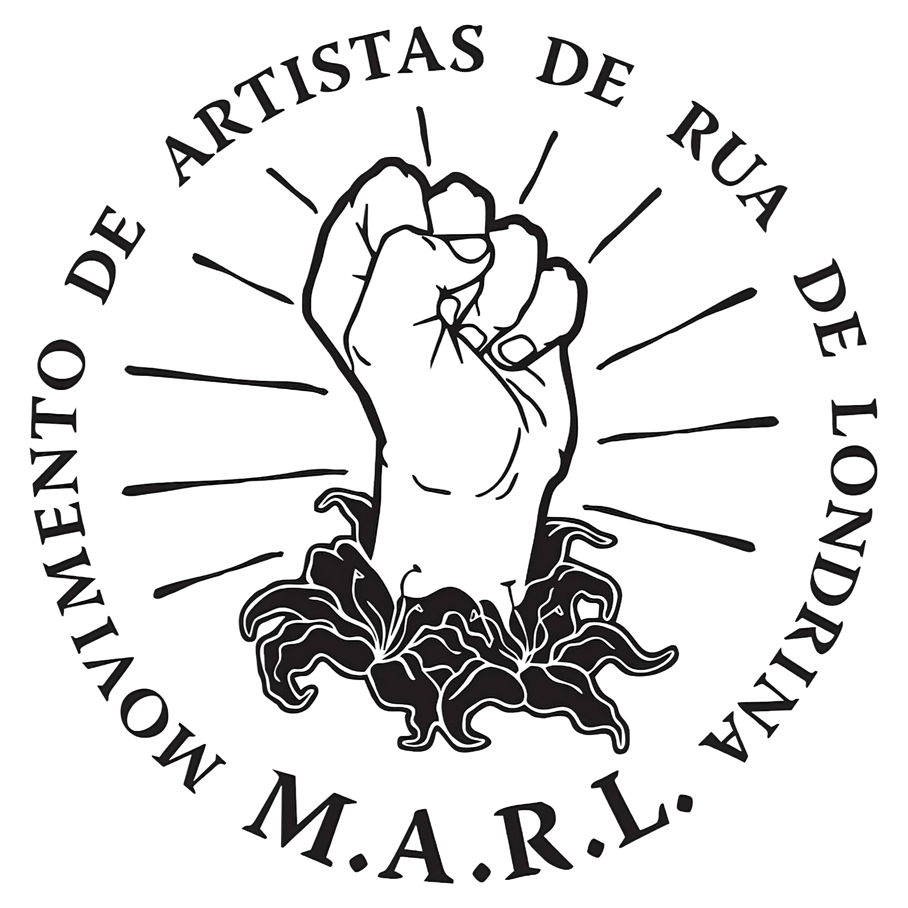
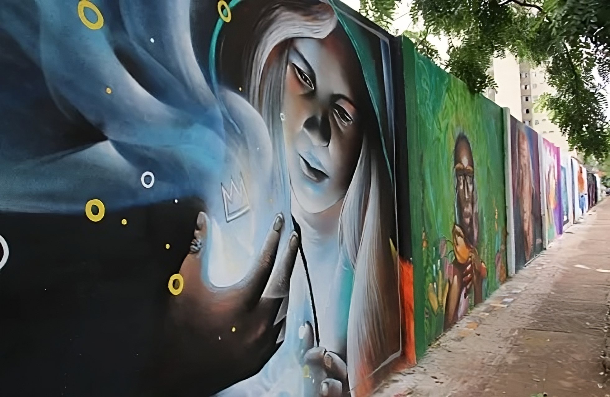
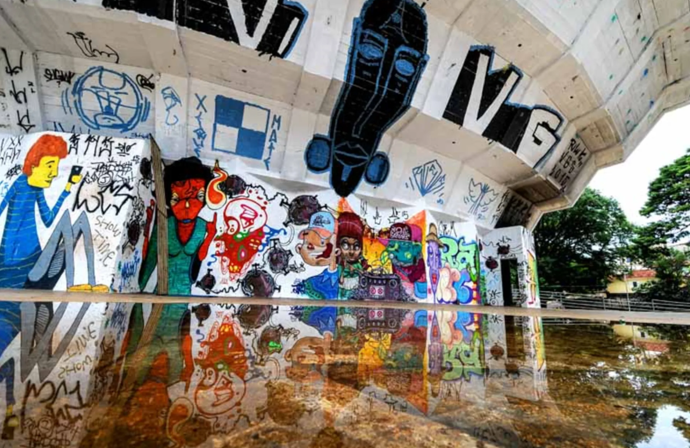
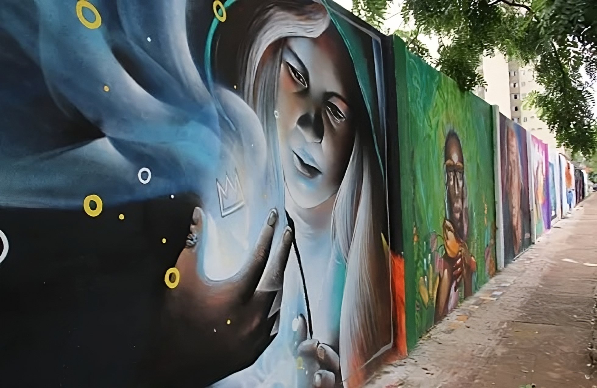
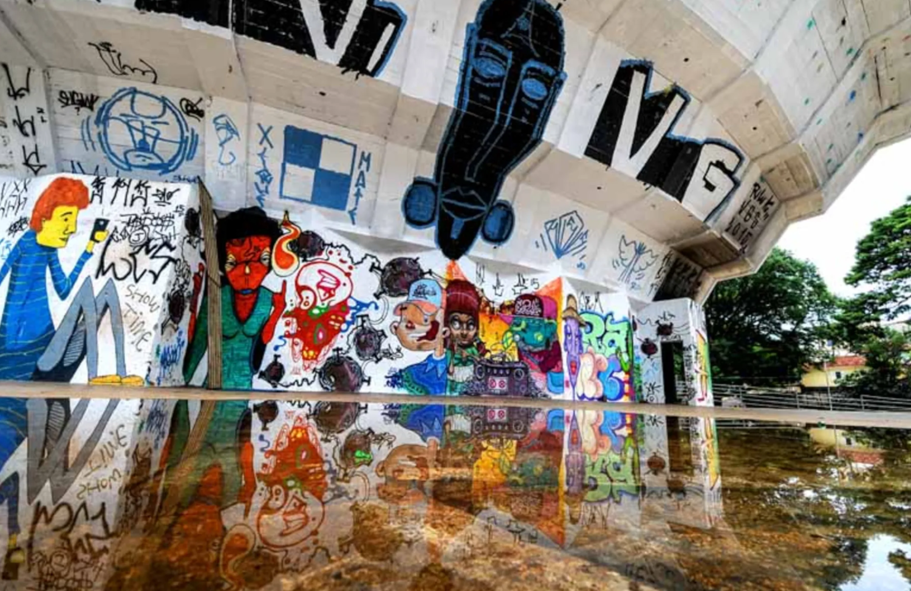

A arte de rua é um movimento artístico cultural que acontece nas ruas das cidades, criando uma fusão entre arte, discurso, cotidiano social e paisagem urbana. Sua expressão tem como pilar a liberdade artística pois não precisa de tempo, espaço, reconhecimento ou vernissages para acontecer. A arte de rua ou Street Art é a expressão que se refere a manifestações artísticas desenvolvidas no espaço público, distinguindo-se das manifestações de caráter institucional ou empresarial, bem como do mero vandalismo. Quando falamos de arte de rua, arte urbana ou arte de rua, referimo-nos às técnicas informais de expressão artística que ocorrem na rua livremente, às vezes até ilegalmente, geralmente nas grandes cidades. É um tipo de intervenção artística de curta duração que não aparece nos museus. A Arte Urbana (street art, em inglês) é um tipo de arte encontrada nos espaços urbanos. Manifesta-se por meio de intervenções, performances, grafite, teatro, dentre outras. Essas ações artísticas ocorrem em ambientes públicos e interagem diretamente com os indivíduos.
Timelapses de Arte de Rua
No primeiro video é uma timelapse de um famoso artista brasileiro chamado Eduardo Kobra. Esse mesmo artista fez várias artes internacionais até mesmo na ONU. No segundo video é uma Timelapse de uma Arte de Rua mais comum.
História
da
Arte
de
Rua
A arte de rua é um movimento artístico que acontece nas ruas das cidades, criando uma fusão entre arte, discurso, cotidiano social e paisagem urbana. Sua expressão tem como pilar a liberdade artística pois não precisa de tempo, espaço, reconhecimento ou vernissages para acontecer.
A história da arte de rua começou no começo dos anos 1970 nos Estados Unidos, onde os primeiros muros e estações de trens começaram a ganhar manifestações artísticas. No Brasil, o movimento chegou anos depois, com a arte de rua ganhando vida através do protesto contra o regime militar. O artista Alex Vallauri foi um dos precursores da arte urbana no Brasil.
Quando se fala em arte de rua, é comum assimilar ao grafite. No entanto, existem diversas outras expressões que caracterizam esse movimento. São elas: Grafite: é a forma mais reconhecida, que aparece em grandes muros, paredes e prédios pelas cidades, trazendo lindas pinturas e críticas sociais; Stencil: técnica que utiliza moldes para criar imagens; Lambe-lambe: técnica que utiliza papel e cola para criar imagens; Pixo: técnica que utiliza tinta spray para escrever palavras ou frases nas paredes.
Artes Urbana
A arte urbana é um movimento artístico cultural que acontece nas ruas das cidades, criando uma fusão entre arte, discurso, cotidiano social e paisagem urbana. Sua expressão tem como pilar a liberdade artística pois não precisa de tempo, espaço, reconhecimento ou vernissages para acontecer.

MARL (Movimento de Artistas de Rua de Londrina)
Movimento de Artistas de Rua de Londrina, surgiu em 2012 com o objetivo de reunir artistas de todas as áreas que desenvolvem o seu trabalho em espaços públicos.
Sobre o MARL
Surgiu com o objetivo de reunir artistas de todas as áreas que desenvolvem o seu trabalho em espaços públicos. O movimento visa estimular discussões artísticas e políticas referentes, principalmente, à cidade de Londrina, possibilitar a troca de informações e experiências, solidificar parcerias a fim de promover ações político-culturais e garantir o intercâmbio entre os artistas londrinenses e movimentos culturais brasileiros.
AMARL (Associação do Movimento de Artistas de Rua de Londrina)
É a entidade que representa juridicamente o MARL (Movimento dos Artistas de Rua de Londrina).
 


